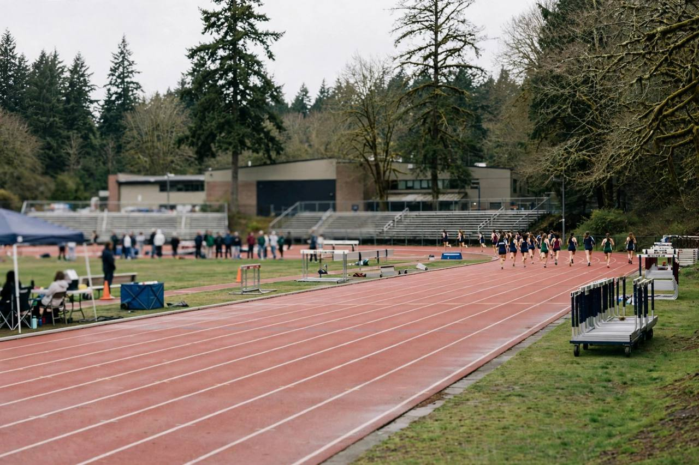

Colorado and Washington Voters to Decide Transgender Girls Sports Bans in First Ballot Test
Reliably Democratic Colorado and Washington will vote Nov. 3 on barring transgender girls from girls school sports, the first time the question has gone directly to voters. Twenty seven states already have such laws, and both sides say a result in a blue state could set the pattern for what comes next.

Key points
- Voters in Colorado and Washington will decide on Nov. 3 whether to ban transgender girls from girls school sports.
- Activists went around those lawmakers to place the measures on the ballot.
- Twenty seven states already have laws barring transgender girls from girls sports, including every state where Republicans control both the legislature and the governor's office.
Voters in Colorado and Washington will decide on Nov. 3 whether to ban transgender girls from girls school sports. It is the first time the question has been put directly to voters anywhere in the United States, and both states are reliably Democratic, with elected officials who have repeatedly rejected such bans.
Activists went around those lawmakers to place the measures on the ballot. Supporters say they are optimistic the bans will pass, and that a win in either state could open the door to similar campaigns in other Democratic controlled states. Opponents say the measures are discriminatory and could add barriers for any girl who wants to join a team.
A test case for both sides
Twenty seven states already have laws barring transgender girls from girls sports, including every state where Republicans control both the legislature and the governor's office. The debate has until now played out in legislatures and courts. President Donald Trump has taken steps to roll back transgender rights, and the Supreme Court has upheld state sports bans.
"What is happening in 2026 is a testing ground for the future," said Chris Melody Fields Figueredo, executive director of the Ballot Initiative Strategy Center, which supports LGBTQ+ rights.
Polling points the same way as the state laws. A Quinnipiac University poll in June found that about 7 in 10 registered voters think transgender women and girls should not be allowed to play on female sports teams, while about one quarter think they should. Democrats are split, with roughly half on each side.
Very few athletes, very large campaigns
Neither Colorado nor Washington keeps an official count of transgender girls in school sports, and the number is believed to be a small share of total participants. Let's Go Washington, the group behind the Washington measure, says it has counted 16 such athletes and that there could be more. The Washington Interscholastic Activities Association has counted about 101,000 girls in the sports it oversees, a figure that double counts girls who play more than one sport.
The money is not small. In Washington, Let's Go Washington has raised more than $7.8 million to campaign for three measures, nearly twice as much as the opponents of the ban. In Colorado, groups registered against the transgender related measures have raised nearly $4 million, more than 20 times what proponents have brought in, though that is not a large sum for a statewide campaign.
For some athletes the argument is personal. Ahnaleigh Wilson, a 17 year old junior at Eastmont High School in Washington, has spoken against allowing transgender girls in girls sports since junior high. She said she won all her 1,600 meter races in seventh and eighth grade until she finished second to a transgender athlete at a major meet.
Opponents answer that excluding transgender girls is itself unfair. "They will say that they want to protect kids and in particular, young girls," said Nadine Bridges, executive director of One Colorado, which leads the opposition to the measure there, "but I don't understand how you can protect kids and discriminate against kids at the same time."
How the Washington measure would work
The Washington measure would require a health care provider to verify a student's biological sex, relying only on the student's reproductive anatomy, genetic makeup, or normal endogenously produced testosterone levels.
"We see that as being as simple as a checkbox," said Hallie Herzberg, a spokesperson for Let's Go Washington. She said doctors can use a patient's history from treating them all their lives, or their medical history forms.
Dr. Libby Loft, who opposes the measure, said the language calls for a genital inspection as part of a physical, or expensive testing. "I think it doesn't make any sense to force the working families of girl sports players in Washington to pay for unnecessary medical tests to be able to weed out an estimated five or 10 girls in the state of Washington, trans girls," Loft said. She fears the verification requirement will lead to fewer girls, transgender or not, playing sports.
Two related measures sit alongside the blue state questions. In Arizona, a measure would broaden an existing ban to include private schools. In Nebraska, a measure would write an existing state law into the state constitution.
There is no clear consensus on whether transgender women and girls hold a competitive advantage. Researchers say it depends on the athlete's age, the sport, whether the athlete went through male puberty and how long they have received hormone therapy. Voters in Colorado and Washington give the first direct public answer on Nov. 3.
Timeline
- Jun 2026A Quinnipiac University poll finds about 7 in 10 registered voters say transgender women and girls should not be allowed on female sports teams, with Democrats split roughly in half.
- Jul 27, 2026Ballotpedia reports five 2026 ballot measures on sex based school sports eligibility and medical procedures for transgender minors, the first time voters will decide either issue at the ballot box.
- Oct 17, 2026Opponents rally in Seattle under the No Hate in WA State banner against Washington Initiative 638 and other November ballot measures.
- Nov 3, 2026Voters in Colorado and Washington decide the transgender girls sports measures, alongside related measures in Arizona and Nebraska.
Sources
- Associated Press: Voters in 2 Democratic strongholds could ban transgender girls from girls school sports
- Ballotpedia News: Five 2026 ballot measures address sex-based school sports eligibility, certain medical procedures for transgender minors
- GLAAD: Fact Sheet for Reporters, LGBTQ-Related Ballot Measures in the 2026 Midterm Elections